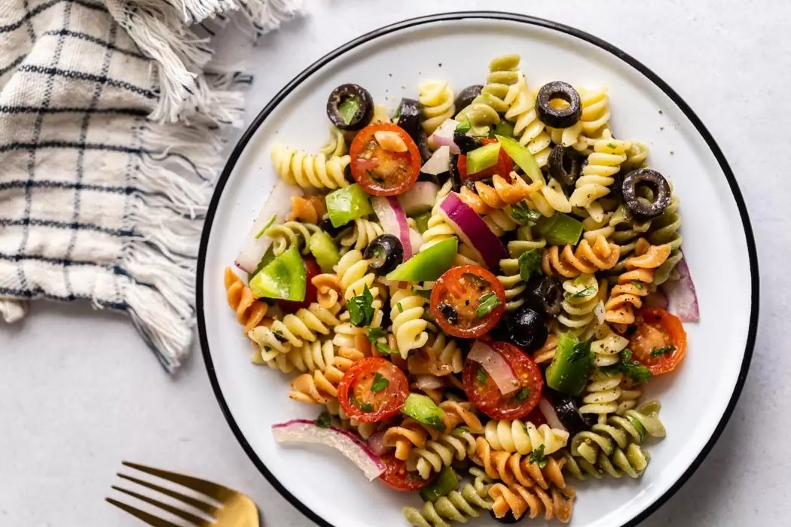

Pasta Salad
by Judy
Posted on January 1, 2019 at 12:00 PM

Fresh and easy pasta salad packed with crisp vegetables, fresh mozzarella, and tossed with a simple homemade dressing. This is the perfect side dish!
In my mind, a nice classic pasta salad serves one of two scenarios:
Attending a picnic, potluck, or other end-of-summer-everyone-bring-something type party;
Addressing the leftover meat, cheese, and vegetables in my fridge and making them into a meal that I pretty much want to eat 24/7.
This pasta salad will do both for ya.
Ingredients:
Serving: 10
PASTA SALAD
1 pound dried pasta
1 cup sliced bell pepper (1 medium)
1 cup thinly sliced zucchini (1/2 medium)
1 cup halved cherry tomatoes
1/3 cup thinly sliced scallions (5 to 6)
1/4 cup sliced pepperoncini or banana peppers, optional
1 cup (4 ounces) halved mixed olives
1 cup (2 ounces) grated parmesan cheese or hard cheese
1 cup (6 ounces) fresh mozzarella balls, chopped
1/3 cup fresh parsley, optional
HOMEMADE DRESSING
1/3 cup red wine vinegar, white wine vinegar or champagne vinegar
1/2 teaspoon fine sea salt, plus more to taste
1/2 teaspoon fresh ground black pepper
1/2 teaspoon dried oregano
2 to 3 tablespoons juice from pepperoncini jar, optional
1/2 cup extra-virgin olive oil
Instructions:
Step 1: Cook pasta according to package directions, in salted water for more flavor. Allow to cool slightly and toss with a little oil to prevent sticking.
Step 2: Blend up the dressing, or shake together in a jar.
Step 3: Toss all ingredients together! I like to use about three-fourths of the dressing, and then I save the rest of the dressing to add to my leftovers.
Step 4: Keep in the fridge for 2-3 days. I think it actually tastes best the day AFTER you make it.
Leave a Comment:
Andy
Nice recipe, very refreshing. Thank you!Jane12
I added some basil to the dressing and it tastes amazing. Also, I can't find mozzarella balls in my place, so I replaced it with soft tofu!Judy
That is a nice substitute for cheese, I will definitely try it next time.Jane12
Thanks, I'm looking forward to your next recipe :)Search
Popular Recipes

Maki Sushi
Sushi rolls, or ‘makizushi’ in Japanese, are what most non-Japanese people think of when they think of sushi.

Panna Cotta
Favorite Italian dessert! Tastes like nothing but fresh milk and cream, plus whatever aromatics or seasonings you choose to add...